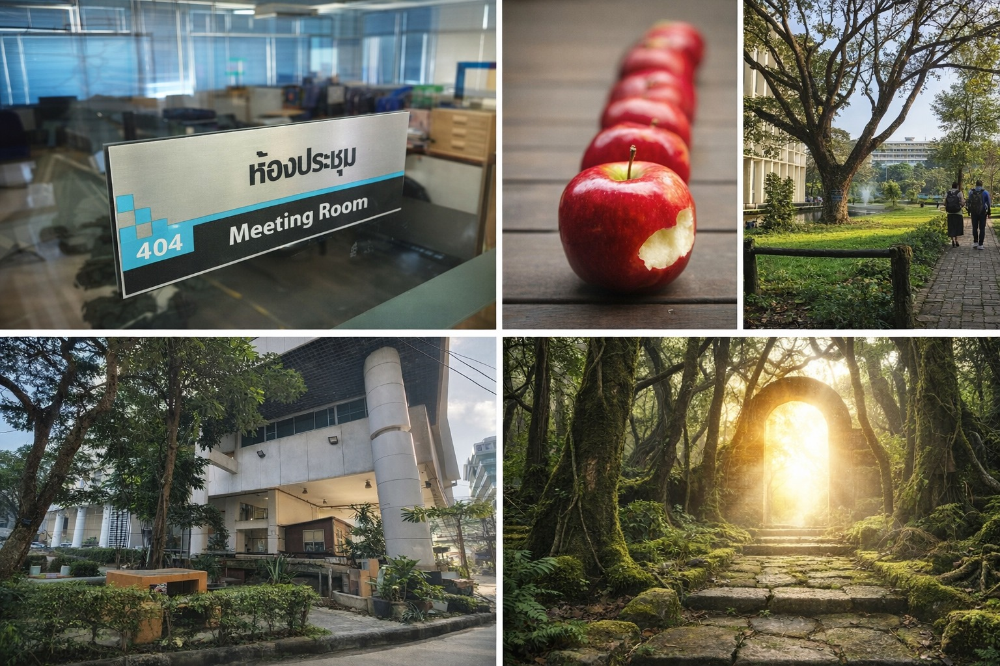

มหาวิทยาลัยจะนิ่งอย่างสงบ ถ้าการอยู่นิ่งปลอดภัยกว่าการพัฒนา
{kind=link}

บทความนี้ทำหน้าที่เป็นบทสรุปของซีรีส์ การเรียนรู้ที่ไร้ความหวัง ซึ่งกลั่นแกนคิดออกมาเป็น 6 ประเด็นต่อเนื่อง ตั้งแต่ระบบที่อยู่รอดได้โดยไม่ต้องคิด เป้าหมายที่ยิ่งใหญ่แต่ไม่เปลี่ยนพฤติกรรม ไปจนถึงข้อสรุปสำคัญว่า ความหวังไม่พอ ถ้าไม่เปลี่ยนเงื่อนไข
สารสำคัญของบทความคือการยืนยันว่า ปัญหาของมหาวิทยาลัยไม่ใช่เรื่องของคนดีหรือไม่ดีเป็นหลัก แต่คือเรื่องของ แรงจูงใจในระบบอุดมศึกษา ว่าระบบให้รางวัลกับพฤติกรรมแบบไหน และลงโทษหรือไม่ลงโทษการอยู่นิ่งอย่างไร
เมื่อระบบทำให้ การอยู่นิ่งปลอดภัยกว่า การพัฒนา มหาวิทยาลัยก็มีแนวโน้มจะนิ่งอย่างสงบ แม้โลกภายนอกจะเปลี่ยนไปแล้วก็ตาม นี่เป็นวิธีมองปัญหาแบบเชิงระบบที่ย้ายสายตาจากตัวบุคคลไปสู่เงื่อนไขที่กำกับพฤติกรรมของทั้งองค์กร
เป้าหมายใหญ่ไม่พอ ถ้าพฤติกรรมจริงยังไม่เปลี่ยน
ซีรีส์นี้ยังชี้ว่ามหาวิทยาลัยสามารถมีเป้าหมายยิ่งใหญ่ได้พร้อมกับการไม่เปลี่ยนแปลงอะไรจริงเลย หากเป้าหมายเหล่านั้นไม่ได้ถูกแปลงเป็นแรงจูงใจและกลไกที่ทำให้พฤติกรรมประจำวันของคนในระบบเปลี่ยนไปด้วย
ในความหมายนี้ ความเรียบร้อยและความปลอดภัยในระบบอาจให้ผลตอบแทนสูงกว่าความกล้า จนทำให้คนไม่ได้โกรธหรือขัดขืนระบบ แต่เพียงแค่เลิกคาดหวังกับมันไปเรื่อย ๆ
ถ้าไม่เปลี่ยนเงื่อนไข ความหวังก็กลายเป็นเพียงคำปลอบใจ
ข้อสรุปสุดท้ายของบทความจึงคมมาก: ความหวังมีความหมายก็ต่อเมื่อมีการเปลี่ยน เงื่อนไขของระบบ ที่ทำให้พฤติกรรมแบบเดิมยังคงคุ้มค่าอยู่ หากไม่แตะเงื่อนไขเหล่านี้ ความหวังก็จะเหลือเพียงถ้อยคำที่ไม่สามารถแปลเป็นการเปลี่ยนแปลงได้จริง
นี่จึงเป็นบทความสรุปที่ทำหน้าที่เหมือนกรอบอ่านระบบมหาวิทยาลัยทั้งชุด ว่าถ้าเราอยากเห็นผลลัพธ์ใหม่ เราไม่สามารถหวังจากคนเดิมในเงื่อนไขเดิมได้ แต่ต้องเริ่มจากการออกแบบระบบให้พฤติกรรมที่ควรเกิดขึ้นกลายเป็นสิ่งที่ทำได้จริงและคุ้มค่าจริง